La base también es parte del diseño final.
Nos adaptamos al proyecto. Podemos decorar diferentes modelos y materialidades de productos según el resultado buscado.
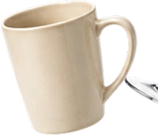
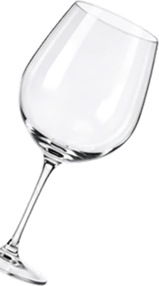
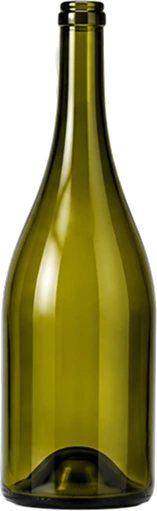
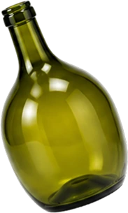
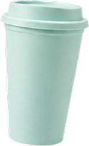
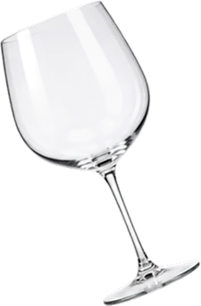
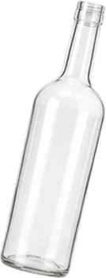
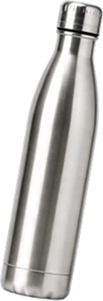
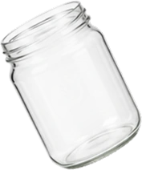
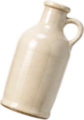
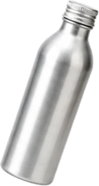
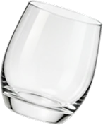
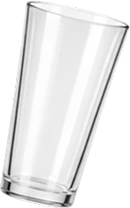
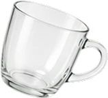
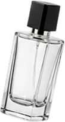
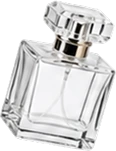
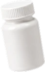
VIDRIO CERÁMICA ALUMINIO PLÁSTICO Y MÁS...Analizamos sus características y te asesoramos sobre las posibilidades de decoración.
Trabajamos junto a fabricantes y proveedores de Argentina y del exterior para encontrar el modelo adecuado.
Preparamos la superficie para que la decoración tenga la adherencia y terminación que necesitás.
Limpieza y desengrase: eliminamos polvo, grasas, siliconas y otros contaminantes que pueden afectar la decoración.
Activación de superficie: realizamos tratamientos como flameado u otros procesos para mejorar la adherencia sobre determinados materiales.
Remoción de recubrimientos: retiramos capas de pintura, barniz o tratamientos previos que puedan interferir con la decoración.
Quemado de etiquetas: eliminamos etiquetas, adhesivos y residuos de envases que necesitan ser reacondicionados.
Promotores de adherencia: cuando el material lo requiere, podemos incorporar tratamientos previos específicos para favorecer la adherencia.
Si no sabés si tu producto está listo para decorar, envianos una muestra y analizamos qué preparación necesita antes de comenzar.
Una misma base. Infinitas posibilidades.
Exploremos las distintas técnicas de decoración de Decormec. Elegí una para conocer sus posibilidades, variantes y combinaciones.
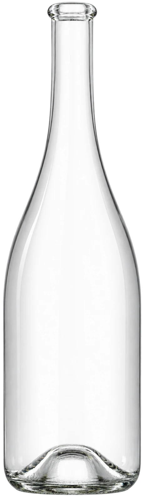
Elegí una técnica del menú para ver cómo se transforma esta misma botella, con sus variantes, acabados y con qué se puede combinar.
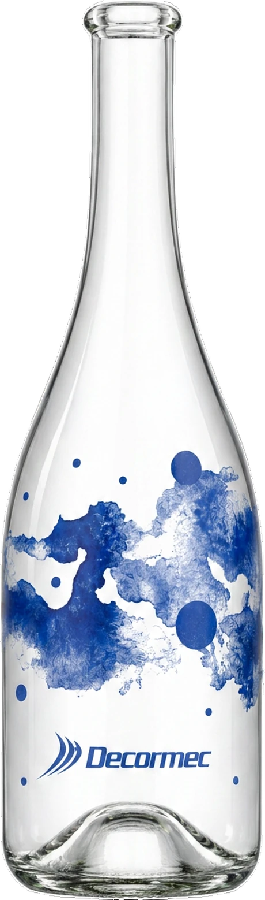
Técnica de impresión directa sobre el envase que permite lograr gráficos de alta definición, desde textos y logotipos hasta imágenes, en uno o múltiples colores.
| Característica | UV | Epoxi | Vitrificable |
|---|---|---|---|
| Resistencia | Alta | Muy alta | Máxima |
| Cobertura cromática | Amplia | Amplia | Específica |
| Superficies a decorar | Todos los materiales | Todos los materiales | Vidrio |
| Apto para lavavajillas | Disponible | Disponible | Disponible |
| Sin metales pesados | Disponible | Disponible | Disponible |
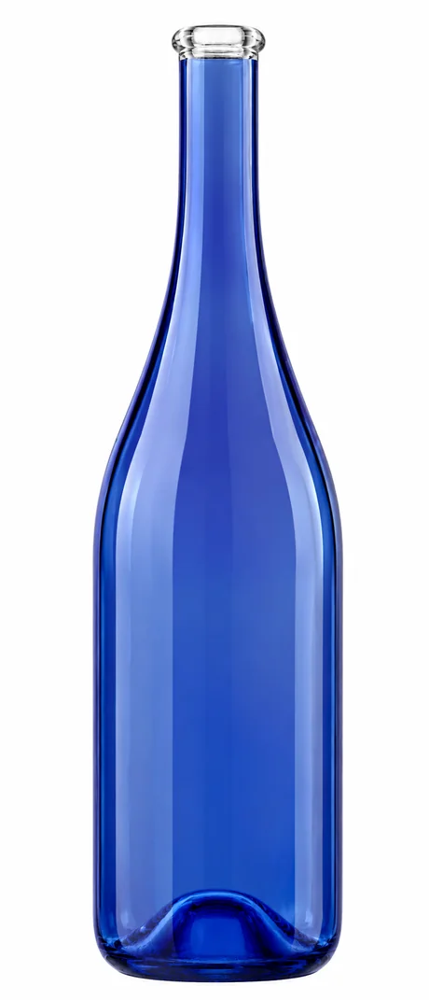
Aplicación de revestimiento con soplete sobre toda la superficie del envase, con un espectro de color amplio y varios tipos de acabado.
Estos acabados son ejemplos — consultanos por más colores y variantes.
Es la técnica más versátil en materiales: funciona igual sobre vidrio, plástico, aluminio o cerámica. Se puede pintar la botella entera o evitar el pico, para que no haya contacto con el líquido al consumir.
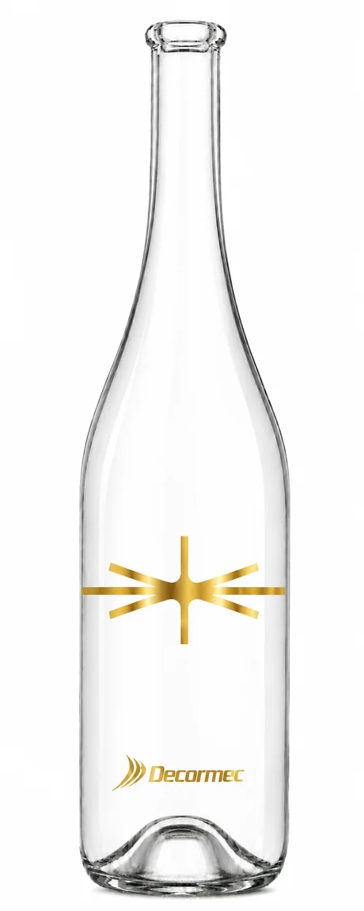
Transferencia de una película decorativa mediante calor y/o presión, ideal para acabados metálicos y detalles finos.
Estos acabados son ejemplos — consultanos por más colores.
Puede aplicarse directamente sobre el vidrio o sobre una superficie tratada previamente con coating, según el desarrollo y la geometría del envase. Permite trabajar en oro, plata y otros acabados metalizados, con tipografías y composiciones de alta precisión.
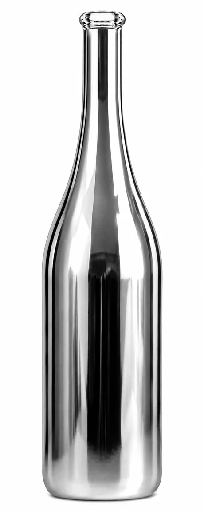
Metalización de toda la superficie del envase mediante deposición al vacío. El acabado de mayor impacto visual de las cuatro técnicas.
Estas tonalidades son ejemplos — consultanos por más opciones.
Cubre la totalidad de la botella, o se puede evitar la boca para que no haya contacto con el líquido. Es un proceso más exigente que el coating, con menor capacidad de unidades, pensado para desarrollos premium. Permite lograr distintas tonalidades dentro del efecto metalizado, y se le puede aplicar serigrafía encima.
La metodología Decormec para transformar una idea disruptiva en un resultado real.
Cada proyecto tiene sus propias variables y tiempos. Nuestra metodología nos permite ordenar cada etapa, anticipar desafíos y validar el resultado antes de llegar a producción.
Nos contás el producto, el resultado buscado y las necesidades del proyecto.
Analizamos envase, diseño, técnica, materiales y acabados.
Desarrollamos muestras y validamos el resultado.
Llevamos el desarrollo validado a producción industrial.
Cada envase tiene características que pueden influir en la técnica, el proceso y el resultado final. Tocá cada pregunta para ver el detalle.